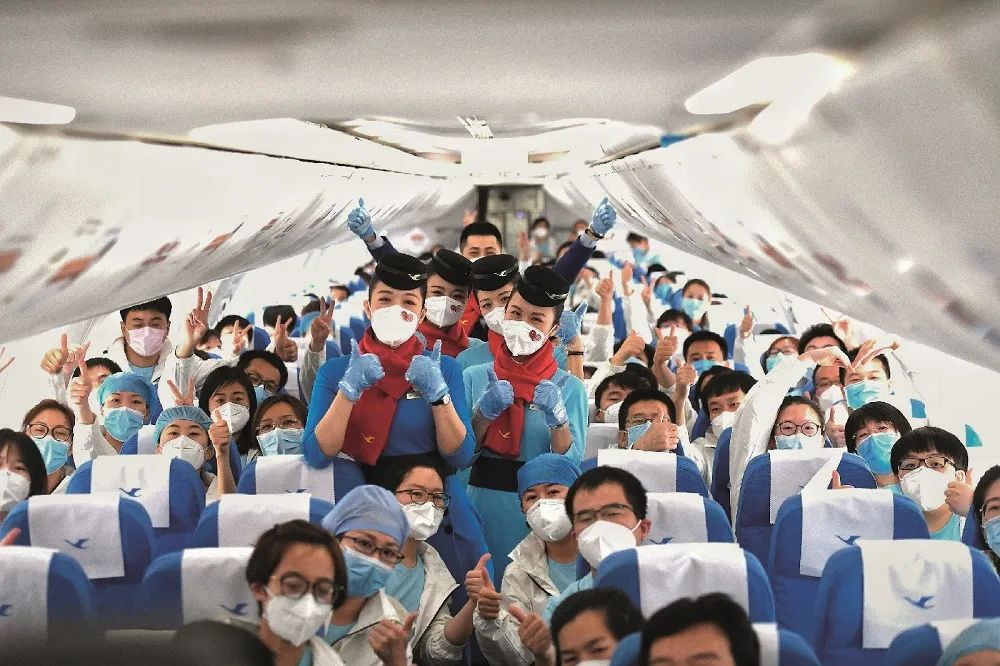
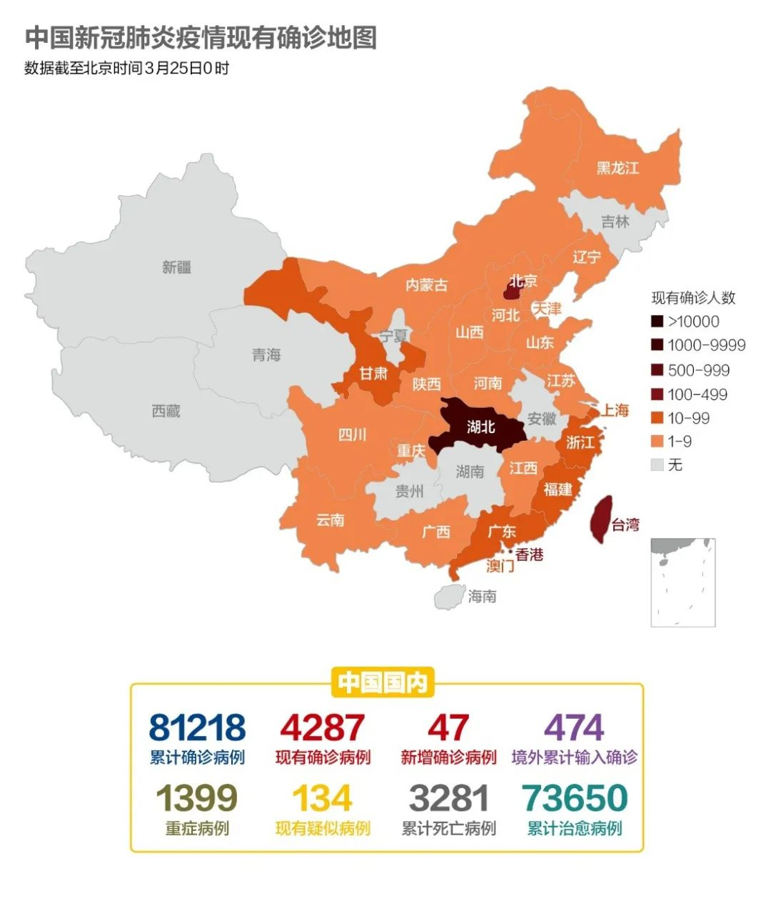
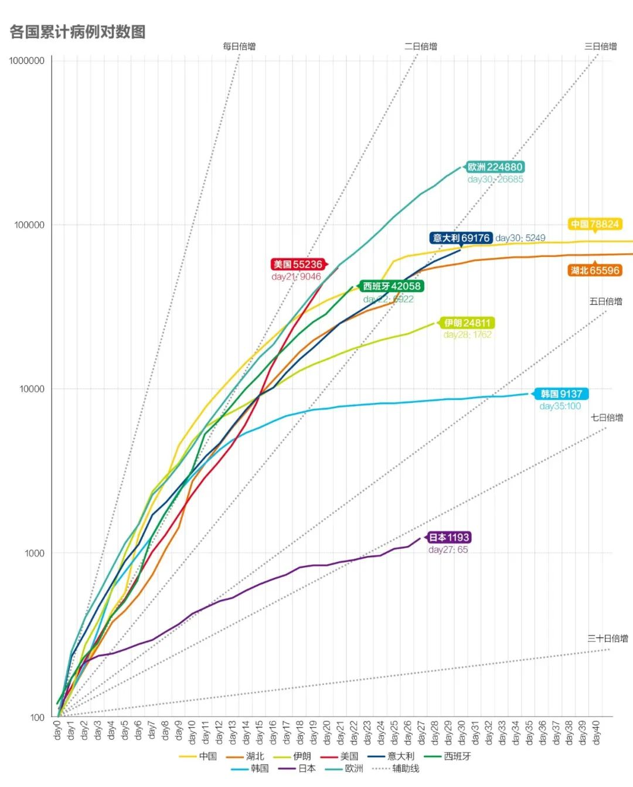
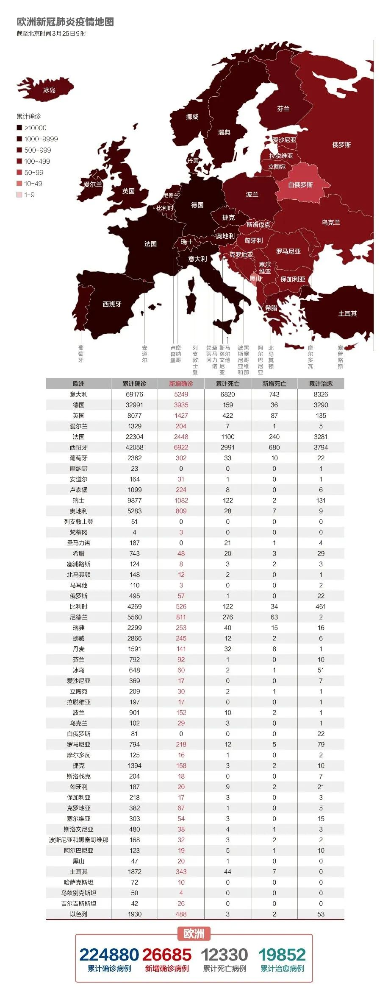
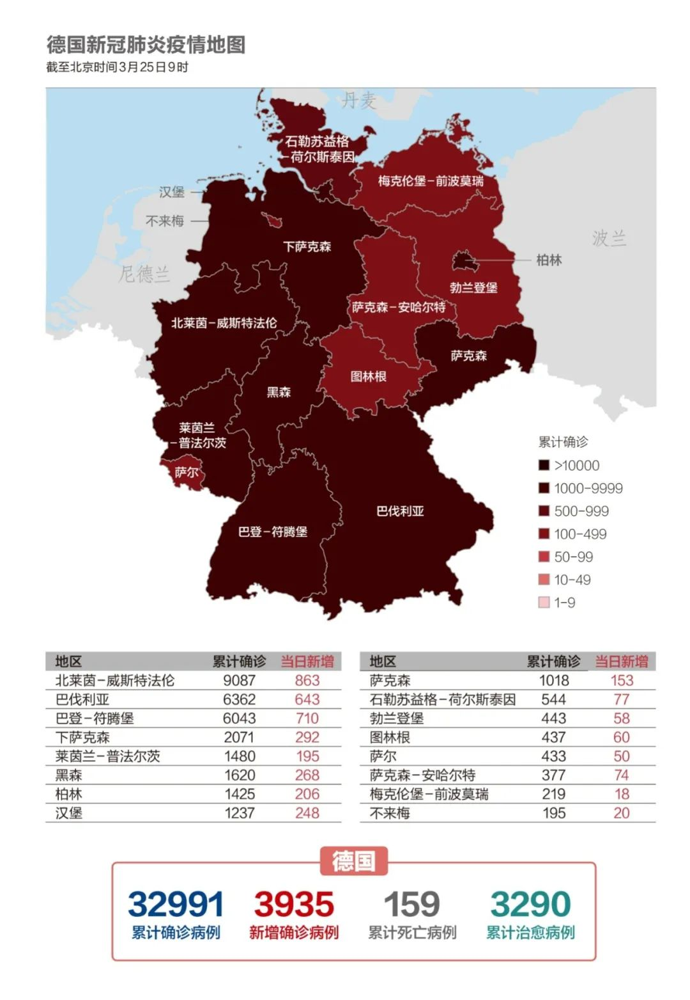
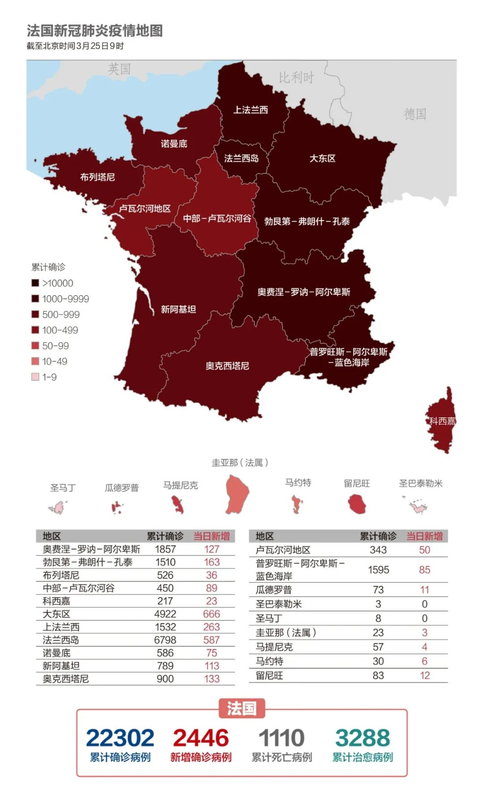

美国确诊增至163例，死亡率远超其他国家，特朗普却这样说……
原文链接 备份链接 据美国《纽约时报》汇总各州公共卫生部门公布的新冠肺炎确诊病例，截至当地时间5日下午，全美已有163例确诊病例，分布在18个州。华盛顿州公共卫生部门5日公布了一例死亡病例，使得全美死亡病例达到了12例。 数据显示，美国 …

湖北有序解封。美国已成全球新冠肺炎疫情“震中”，经济刺激方案已经通过国会。英国急购350万个检测盒加紧备战。

文/《财经》数据研究员徐进
图/《财经》视觉中心 编辑/郝洲
一、湖北除武汉外全部解封
图1

今日国内简述：国内报告新增确诊病例47例，全部为境外输入病例。为进一步精准有效防范疫情跨境输入，最大限度堵塞风险漏洞，多地调整升级入境防控措施。明确了检疫的流程和隔离期间的费用问题。，湖北卫健委发布湖北省新型冠状病毒感染肺炎疫情防控指挥部通告称，从今日零时起，武汉市以外地区解除离鄂通道管控，有序恢复对外交通，离鄂人员凭湖北健康码“绿码”安全有序流动；从4月8日零时起，武汉市解除离汉离鄂通道管控措施，有序恢复对外交通，离汉人员凭湖北健康码“绿码”安全有序流动。四川通告麻将厅可恢复营业。
二、美国成为全球新冠疫情的“震中”
图2

全球确诊病例（含中国）超40万。世卫组织发言人玛格丽特·哈里斯表示，过去24小时内85%的新冠肺炎新增病例来自欧洲及美国，美国新冠肺炎确诊病例迅速增加，有可能成为全球新冠肺炎疫情“震中”。
图3

伊朗、日本当前倍增时间均为8日左右，相对不算太快，但需要关注的是总量仍在持续上升，且后者有所抬头。意大利预计两日内超越中国同期，当前倍增时间还在7日左右。西班牙已超越中国同期，倍增时间4日左右。欧洲整体已接近中国累计病例3倍，当前倍增速度略慢于西班牙，但快于意大利。美国当日略有减缓，倍增速度降至与西班牙接近，但很可能是检测能力不足所致。海外整体仍处在爆发期。小编认为个别国家决策者至今不意识到传染病的快速增值（陡峭指数）特性，把它与车祸死亡（常数）类比；不意识到追踪、隔离、检测、确诊是传染病防控最关键闭环；不意识到危机关头国际合作至关重要；在防控措施远未到位时竟天真期待早日恢复正常，这才是真正令大家担忧的。
三、特朗普盼“复活节”前恢复正常，向韩国求购医疗设备
图4

美国累计确诊超5万，新增病例已是全球第一。
首都华盛顿特区已经暂停了城市的大部分日常经济活动。3月24日，美国总统特朗普称希望尽快解除社会控制措施、进而恢复经济活动。特朗普表示，他的团队正在“非常努力地工作”，以使复活节（4月12日）前让社会重新开放成为现实。但美国参谋长联席会议主席马克·米尔利表示，美国可能需要90天才能渡过新冠肺炎疫情带来的危机。
美国参议院领导人和特朗普政府3月25日就2万亿美元的经济刺激方案达成协议。美国国家经济顾问库德洛3月24日晚在白宫的记者会上，政府对经济的总体援助将达6万亿美元，其中包括来自国会的2万亿美元和来自美联储的4万亿美元。
特朗普在24日与韩国总统文在寅的通话中表示，他希望韩国可以为美国提供医疗设备的支持。
四、英国全力增加检测能力，意大利用防护物资换病床
图5

欧洲累计确诊已超20万，西班牙新增病例超过意大利，位列全欧洲第一位。
英国卫生大臣马特·汉考克24日宣布，英国已紧急购买了350万个新冠病毒抗体检测试剂盒。充足的新冠病毒检测试剂盒可以改变英国疫情现状，让英国国家医疗服务体系（NHS）准确了解和确定人们的感染状况。首相鲍里斯·约翰逊上周曾表示，希望尽快提高检测能力，每天测试达到25000人。据公布数据显示，实际上英国目前每天测试数量未超过8400例，而上周每日平均数量也只刚刚超过5400例。牛津大学研究人员称已经开发出一种新的检测方法，正在进行临床检验。该检测方法能在30分钟内检测出病毒感染者。
英国国民医疗服务系统计划将伦敦国际会展中心改造成一座临时的可容纳4000张床位的“方舱医院”。英国政府还将公开招募25万名志愿义务工作者，另有1.2万名退休医护人员已同意重返岗位，协助医治新冠病毒患者。
图6

当地时间24日下午，意大利内阁通过新疫情防控法令。新法令规定，国家紧急状态持续至7月31日；违反防控措施的行政罚款额度提高到400-3000欧元；违反法令从事商业活动，将被强制关停经营场所5-30天；各大区政府可以在法令基础上采取更严厉的防控措施。
意大利将从阿尔托·阿迪杰地区向奥地利蒂罗尔州转移5名意大利新冠肺炎患者。而作为交换，意方将把一部分来自中国的防护物资送给奥地利。
图7

新冠疫情在德国的爆发式增长已为在德中资企业经营带来负面影响，部分行业甚至十分严重。在受影响的企业中，近30%企业表示上半年收益预计将降低20%以上。有43.64%的企业表示由于经济动荡使其难以做出经营和投资的相关决定。与此同时，有三分之一多的受访企业计划适当降低业绩目标。尽管预计收益受损严重，但仍有65%的受访企业为未来保持乐观态度，将业绩寄希望于下半年疫情结束后的爆发式增长。
图8

法国政府宣布3月24日起关闭露天集市。法国应对新冠肺炎疫情的科学理事会24日建议政府延长管制措施，持续至少6周时间。法国现阶段采取的“封城”措施及一系列管制措施是从3月17日开始的，原计划3月底结束。而如果按照科学理事会的建议，管制会至少延续至4月底。
【特别说明：以上统计，2月28日前为世卫组织官方统计数据，数据截止时间为北京时间每日17时；从2月28日开始，数据由《财经》根据公开资料统计，截止时间为北京时间每日9时】
五、全球疫情数字速览：
1、【奥运会推迟损失60亿美元】《日本时报》报道，推迟奥运会造成的损失大约为58亿美元，《日经新闻》认为损失在54亿美元到63亿美元之间，这些损失只是奥运会本身的损失和推迟一年造成的财政消耗。如果奥运会被取消，损失将达到410亿美元。
2、【航空业损失1130亿美元】国际航空运输协会（IATA）的一项评估认为，新冠疫情在全球的蔓延对国际航运业造成巨大损失，预计全年营收将损失1130亿美元。据国际航空运输协会的官方网站，三、四、五这3个月里，航班依次减少50％、40％和25％。到6月30日前，有110万架航班被取消。
小结：湖北武汉以外地区解除离鄂通道管控，武汉将于4月8日正式解封。美国正在成为全球疫情的“震中，面临国内医疗设备和防疫物资的短缺，特朗普已向韩国发出求救信号。英国正在为迎接疫情的高峰加足马力做准备，意大利重症病房严重短缺，开始用防护物资换取邻国接收本国病人。

▲点击图片查看更多疫情报道
责编 | 黄端 duanhuang@caijing.com.cn
本文为《财经》杂志原创文章，未经授权不得转载或建立镜像。如需转载，请在文末留言申请并获取授权。
原文链接 备份链接 据美国《纽约时报》汇总各州公共卫生部门公布的新冠肺炎确诊病例，截至当地时间5日下午，全美已有163例确诊病例，分布在18个州。华盛顿州公共卫生部门5日公布了一例死亡病例，使得全美死亡病例达到了12例。 数据显示，美国 …
原文链接 备份链接 当地时间2月29日，美国华盛顿州西雅图市国王县卫生官员报告称，一名50多岁的男性新冠肺炎患者当天在当地一家医院死亡。这是美国首例新冠肺炎患者死亡该病例，就死者感染路径，美国疾控中心国家免疫和呼吸系统疾病主任梅索尼 …
原文链接 备份链接 世卫组织和国际社会明确反对将病毒与特定国家和地区相联系，反对搞污名化 《财经》综合报道 编辑 | 谢丽容 美国当地时间3月24日，美国总统特朗普在接受美国福克斯电视台（FOX）采访时表示，他决定不再公开使用“中国病毒” …
原文链接 备份链接 中国本土病例出现“倒春寒”值得引起警惕。美国新增高得吓人并且还未到峰值。欧洲医疗资源充沛的国家开始跨国接收重症患者。 文 |《财经》数据研究员 徐进 图 |《财经》视觉中心 编辑 | 郝洲 一、国内再现本土新增，输 …
原文链接 备份链接 截至北京时间3月22日12时，除中国外，184个国家和地区累计确诊222707例新冠肺炎，“钻石公主”号邮轮712例。 当前，欧美疫情仍旧快速蔓延。其中，意大利病例突破5万例，总理孔特要求全国停止所有非必要的生产活 …